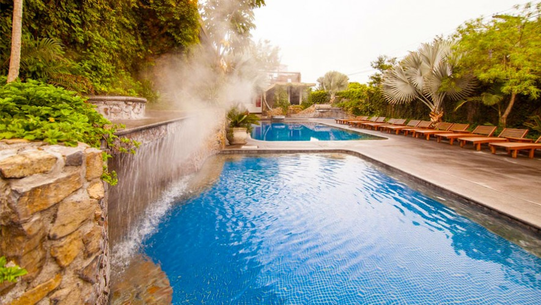

Conoce estas aguas termales que puedes encontrar en Guatemala. Las aguas termales son provenientes de las capas subterráneas de la Tierra. Además contienen muchos componentes minerales que son buenos para la piel.
Lo mejor es que en Guatemala existen distintos lugares em donde puedes sumerguirte en estas aguas, muchas veces su temperatura es un poco elevada, y eso hace que sea una actividad muy relajante. Guatemala, Amatitlán, Chiquimula y Jalapa son algunos de los sitios en donde encontrarás estas maravillosas aguas. Sin duda disfrutarás ya que estos lugares son increíbles. ¡Vamos pues!
